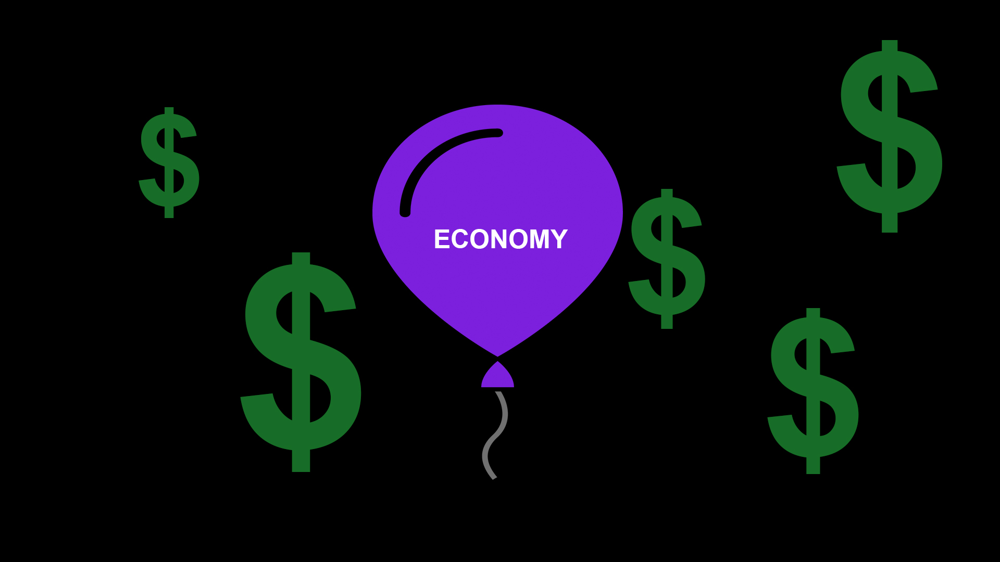

Do you have a dollar?
Because the rest of us do.
Contrary to soothsaying in the tech media, a fully cashless society isn't as close to fruition as, say, a self-driving car. Unless you're an American making more than $200,000 per year (and you're probably not), then cash is your No. 1, go-to payment choice.
Cash owes its reign to base-level accessibility, being available to nearly every American who wants it.
Credit and debit cards remain widely used payment options, and, yes, there's an increasing trend toward mobile payment platforms such as Venmo and Apple Pay, but each of these requires second steps: bank accounts, applications and/or access to technology.
Ultimately physical cash, comprising trillions in bills and coins, is viewed by most Americans as accessible, safe and a smart payment choice when economic headwinds increase and cash becomes the crutch to maintain our financial footing.
What we use to pay for things says a lot about us -- it speaks to our education level, our income level and our generationality -- and those are the drivers keeping the Washingtons, Lincolns, Benjamins, and in a few years the Tubmans, in our pockets for the foreseeable future.
No matter how much you make, you're still using cash
Since paper notes were first issued in 1690 in U.S., cash had made through many competitions with checks, credit cards, and debit cards, and now with the rise of mobile payments. While some are saying “long live paper money”, cash has not yet said goodbye.
<<<<<<< HEAD“We do expect cash to come under some additional competitions and that’s to be expected, but again we do expect cash to stick around for quite a long time. Clearly there are still needs for cash and it doesn’t show any signs of decreasing,” said Shaun O’Brien, senior analyst of Cash Product Office in Federal Reserve System. “ We don’t see the demise of cash people often see in the media.”
Recent years’ cash in circulation growth, 4 to 5 percent, is doubling the GDP growth, 1 to 2 percent, according to O’Brien, and institutions continuously invest in cash handling technology due to the high demand from customers.
As in 2012 all American households are still using cash. It is utilized to pay for more than one third of the transactions on each income level, according to Federal Reserve System in its 2014 Diary of Consumer Payment Choice survey
For most families, cash is still the king. Only households with a over $200,000 yearly income paying the largest portion of their monthly transactions with credit cards, 41 percent, more than the part paid by cash, 33 percent, while the rest of the American households use cash to make the majority of their transactions.
The probability of cash usage and preference negatively correlated with income level. As households’ income level decreases, people are more likely to choose cash over other payment types.
When it comes to obtaining payment instruments, it is expensive to be poor. Cash therefore has a solid user base that other payments seem to be short of. Families who make less than $25,000 a year not only use cash more often, but also prefer cash over other payments the most.
The cost of using each payment type here? Credit, debit, check, mobile, ...
“Banking sector can be expensive once you started getting fees added onto your account,” said Shaun O’Brien, Senior Analyst at The Federal Reserve System’s Cash Product Office.. “It is much cheaper for these people to maybe go to a check cash store. They understand that they will pay a certain percentage of it, and that’s it. When they spend cash going forward, there are not going to be any additional fees.”
…….in fact the number of low-income households is mostly likely to grow, and poverty rate is continuously going up.
As shown in 2014 Income and Poverty in the United States by U.S. Census Bureau, median household income was $53,657, 6.5 percent lower than the median income in 2007 and 7.2 percent lower than median income in 1999 when the number hit the $57,843 peak. Poverty rate of 2014 was 2.3 percentage points higher than in 2007, the year before the most recent recession.
Still need a quote here.
And the reality is in favor of the low-income households.
DTE Energy Co., Detroit energy company, put in 30 kiosks in its payments center at the end of 2015, for those who are unbanked to pay bills in cash. In April this year, anti-poverty advocates in Minnesota urged lawmakers to boost funding of a monthly cash assistance program for low-income families for the first time in 30 years. During the same month, Internal Revenue Service announced individual taxpayers without a bank account or credit card can now make a payment with cash at over 7,000 7-Eleven stores nationwide.
“We do expect cash to come under some additional competitions and that’s to be expected, but again we do expect cash to stick around for quite a long time. Clearly there are still needs for cash and it doesn't show any signs of decreasing,” said Shaun O’Brien, senior analyst of Cash Product Office in Federal Reserve System. “We don't see the demise of cash people often see in the media.”
Recent years' cash in circulation growth, 4 to 5 percent, is doubling the GDP growth, 1 to 2 percent, according to O'Brien, and institutions continuously invest in cash handling technology due to the high demand from customers.
As in 2012 all American households are still using cash. It is utilized to pay for more than one third of the transactions on each income level, according to Federal Reserve System in its 2014 Diary of Consumer Payment Choice survey
For most families, cash is still the king. Only households with a over $200,000 yearly income paying the largest portion of their monthly transactions with credit cards, 41 percent, more than the part paid by cash, 33 percent, while the rest of the American households use cash to make the majority of their transactions.
The probability of cash usage and preference negatively correlated with income level. As households' income level decreases, people are more likely to choose cash over other payment types.
When it comes to obtaining payment instruments, it is expensive to be poor. Cash therefore has a solid user base that other payments seem to be short of. Families who make less than $25,000 a year not only use cash more often, but also prefer cash over other payments the most.
The cost of using each payment type here? Credit, debit, check, mobile, ...
“Banking sector can be expensive once you started getting fees added onto your account,” said Shaun O'Brien, Senior Analyst at The Federal Reserve System’s Cash Product Office.. “It is much cheaper for these people to maybe go to a check cash store. They understand that they will pay a certain percentage of it, and that's it. When they spend cash going forward, there are not going to be any additional fees.”
…….in fact the number of low-income households is mostly likely to grow, and poverty rate is continuously going up.
As shown in 2014 Income and Poverty in the United States by U.S. Census Bureau, median household income was $53,657, 6.5 percent lower than the median income in 2007 and 7.2 percent lower than median income in 1999 when the number hit the $57,843 peak. Poverty rate of 2014 was 2.3 percentage points higher than in 2007, the year before the most recent recession.Still need a quote here.
And the reality is in favor of the low-income households.
DTE Energy Co., Detroit energy company, put in 30 kiosks in its payments center at the end of 2015, for those who are unbanked to pay bills in cash. In April this year, anti-poverty advocates in Minnesota urged lawmakers to boost funding of a monthly cash assistance program for low-income families for the first time in 30 years. During the same month, Internal Revenue Service announced individual taxpayers without a bank account or credit card can now make a payment with cash at over 7,000 7-Eleven stores nationwide.
It is easy to get and easy to use.
You can ApplePay at a vending machine, use a debit card at a food truck, and if you want to buy a drink on an airplane, don’t you dare think of using cash because they only accept cards.
It seems like everywhere you look people are eschewing cash for plastic and digital ones and zeroes beamed from phones to point of sale systems. But looks can be deceiving.
Cash accounts for 33 percent of all payment transactions. No matter if you’re rich, poor, young or old, cash captures one-third. That number might be shocking in a time of technological transition that seemingly positions cash as the horse and buggy to plastic’s Model T.
“People use cash because they find it easy, convenient and fast, even if they have higher incomes and more options,” said Joanna Stavins, a senior economist and policy adviser at the Federal Reserve Bank of Boston.
Cash remains a relevant form of payment for several key reasons. Besides the fact that everyone is using it, you also don’t need a credit score, a checking account or a cellphone to pay with cash. In fact, the barriers to get cash in your hand are minimal when compared to other popular forms of payment. And when you’re out to eat at a restaurant that doesn’t accept cards, the reliability of cash alone merits a place in your wallet next to all your cards.
Put simply, there is $1.45 trillion in U.S. cash circulating on any given day–that’s a lot of opportunity to get your hands on some those ones, fives and twenties.
Cash is being edged out. Or is it?
All of this sounds great for cash, right? That is until you talk to a few friends who quickly dismiss this notion. Nobody uses cash anymore, they can’t remember the last time they paid with paper money, etc.
Hardly.
Believe it or not, the average American still makes about 22 transactions a month using cash, spending approximately $21 per cash transaction.
We use cash far more than we think.
Whether a person makes $5,000 a year or $500,000 a year, they always say they prefer some method other than cash.
Their bill statements just don’t reflect it.
And while not everyone prefers cash as their primary payment method, research indicates that most of those consumers would declare it their preferred back-up method.
Think about it this way: Picking payment types is actually a lot like voting for the 2008 Heisman Trophy.
No, really. It is.
The Heisman is awarded to the nation’s top college football player every season. In 2008, it was a three-horse race between Oklahoma quarterback Sam Bradford, Texas quarterback Colt McCoy and Florida quarterback Tim Tebow (maybe you’ve heard of him).
Tebow earned more first-place votes (309) than any other candidate, but also had the least second and third-place votes (441) of the three.
Bradford, on the other hand, had nine fewer first-place votes than Tebow, but came in second 108 times more than Tebow. Most voters assumed Tebow would finish first, but enough people picked Bradford to finish second and third that it didn’t matter.
Tebow finished third. Bradford has the Heisman.
Bradford is cash. Tebow is every payment option that isn’t cash.
Cash may not be getting the most first-place votes anymore, but it’s still heavily leading in second and third-place votes, and because of that, it’s always a serious contender in how you choose to pay.
Accessibility
Cash is available to anyone, regardless of your financial standing or ability to open a bank account. The cash you have in your wallet now at one point went through a bank, whether you received your cash directly from that institution or from somewhere else, and it says a lot about the level of access you have to a financial institution. There are three types of relationships a person can have with a bank that ultimately affects the way they get their hands on cash.
This is important because approximately one-fifth of Americans are underbanked, an FDIC distinction that means they have a bank account but are not fully committed to using it. Digging deeper, about 8 percent of Americans do not have any connection with an insured institution.
The weaker a person’s relationship is with their bank, the more likely they are to use cash. The majority of Americans, or 67 percent of us, have a solid relationship with our bank. Those in this group have a bank account and can get access to their money by simply depositing or withdrawing it from a teller or ATM.
Unbanked customers rely on cash much heavier than bank account holders do, according to the research paper “How Consumers Pay: Adoption and Use of Payments” by Scott Shudah and Joanna Stavins. About three-quarters of their transactions were conducted in cash compared to just one-quarter for consumers with a bank account.
“Unbanked customers have a very limited set of options,” Stavins said, making cash the only logical choice.
While Stavins said cash usage is heavier among those in lower income brackets, those with more money don’t fully abandon cash. You can be filling up all the card slots in your wallet and you still will use cash for some transactions.
“There’s still room for cash for sure,” Stavins said.
Usage
For the average American, cash mostly comes into play when smaller transactions must be made.
A 2014 study by the Federal Reserve shows the average value of a cash transaction is just $21. For non-cash payments, the study states the average value for debit cards was $44 and $168 for checks.
It makes sense. Think about your spending habits on an average day–you buy your morning coffee, then maybe you stop off for a bagel, pay for parking at your destination, not to mention lunch and your mid-afternoon caffeine. Those transactions haven’t even carried us to the end of our day, yet we’ve already made several small purchases ripe for cash usage.
A study authored by Shaun O’Brien of the Cash Product Office cites evidence from the “Diary of Consumer Payment Choice” that reinforces this point. Of the 50.5 non-bill payments consumers averaged during the month, more than half of them were under $25. The larger the purchase, the less likely it is that people will use cash.
Weak Opponents
When it comes to preferential voting, whether it’s the Heisman or payment choices, the champ doesn’t need to be invincible so long as it has a leg up on the competition–and for cash that’s its universal acceptance.
When we think about the near future, we imagine a consumer market in which all transactions can be made by a scan of our smartphone. The forecast may look strong for this type of payment, but its current state of availability makes it a weak contender when put up against cash. Data from Let’s Talk Payments showed that as of January, just 17 percent of all point of sale terminals accepted EMV-NFC (chip and wireless) payments, while an additional 26 percent accepted EMV-only (chip) payments. Together that totals less than half of all point of sale terminals in the United States.
Even if the public is ready to launch into the future of mobile wallets, the infrastructure isn’t quite there yet. Adam Smitherman of Total System Services Inc. said that the RFID systems, the larger umbrella under which NFC resides, were not widely available when mobile wallet payment options made their debut.
“We didn’t exactly have a great infrastructure in place, it wasn’t widespread,” said Smitherman. “I think that updates to infrastructure and that being pushed by a large brand such as Apple will have us get there.”
What does this mean for consumers today? More often than not, you’ll be safest leaving the house with a little bit of cash on hand.
There's more ways to pay, but cash isn't going away
Lede - Ubiquity of cash, for sure, but it’s market share is being diluted by old standbys such as credit and debit and up-and-comers, such as NFC payments and in-app purchases.
Nut graf - What does the future look like? Stavins quote. What will the cash usage fall to in 2020?
Body 1 - Credit/Debit
Body 2 - Mobile payments
Body 3 - What we’re shopping for/where we are spending money -- online
Video of going around Evanston and profiling businesses and seeing which places accept cash only, credit debit, have apple pay etc.
Body 4 - Security/Safety/ Roadblocks to non-cash acceptance. What needs to be present before cash is fully usurped or its influence muted?
Interactive Graph/animatio video of the usage of mobile payments/mobile wallet, the risk of using these payments, who is using these payments, what they're buying with these payments
Until some systemic issues are fixed -- which may never happen -- cash will remain a fixture, however diminishing, in American life.
People trust what they can touch.
Your grandmother may have had stacks of twenties stuffed into her mattress, but Nana did it for a good reason.
Keeping cash in the home is one of the greatest lessons learned from the Great Depression. As banks failed, the people who trusted them to hold their money lost out, with many losing everything they had.
The alternative was to keep cash on hand. Pulling money out of bank vaults and stuffing it into thick mattresses and shoeboxes stacked high in closets turned into everyday acts. Benjamin Roth, a lawyer who documented the economic downturn in a diary, wrote in 1936: "This depression has indelibly impressed on my mind one thing, and that is the value of having on hand sufficient capital to cover emergencies."
The lessons from the Great Depression loom large over today's spending and saving habits. Even in an era of depositing checks from your phone and swiping a card to spend money you've never seen, cash—the physical currency that you can touch and count—has remained a sturdy and dependable form of personal capital. Seeing is believing, and when people don't trust the economy, they hold onto their bills just like grandma did.
"When you think about it, to have money, you need a tremendous amount of trust," said Dan Ariely, author and professor of psychology and behavioral economics at Duke University. "It's an agreement between everybody about what it is and what it's worth, and when you don't trust the economy, people are less likely to be willing to have more abstract representations of money rather than the concrete [cash]."
If the Great Depression was the lesson, then the Great Recession, which broadsided the economy in 2008, was the midterm exam this country never wanted to take. With the economy teetering on the brink of collapse and the financial footing of many Americans becoming increasingly shaky, many people took the cash-only mantras of famous advisors like Suze Orman and Dave Ramsey to heart, spending only what they had compared to what they didn't have yet.
The effect was measurable. By the close of the Great Recession in 2009, cash outpaced every other payment form and, perhaps most consequential, accompanied a precipitous drop in credit card usage over the same time period, according to a study by the Federal Reserve Bank of Boston. This dip in credit card use and immediate surge in cash payments was more than a bellwether of the American economy—it represented a vote of no confidence in the financial security of its citizenry and its willingness to take steps to mitigate the fallout.
"We want to manage our finances in a better way and constraining ourselves really helps," Ariely said. "If we don't think about how much money we have and spend using credit cards, we might not constrain our spending. But if we have cash, we're more connected to it, and we understand better what we have. We might spend less."
What exactly is a recession?
animation code would go here
Consumer sentiment levels during other recessions show similar evidence of this mistrust. The University of Michigan Surveys of Consumers asks Americans their feelings about financial security: their personal finances, business conditions and future purchase plans. The survey's historical data shows huge dips in confidence happen during these times of economic distress. This loss in confidence affects our spending habits, and it certainly affects how we pay for things.
The History of Consumer Confidence and the Recession
During economic hard times, consumer lose confidence in the economy. Here's what we've seen:

timeline code would go here
There's a psychological reason for our attachment to cash. The connection is based on a sense of "psychological ownership" because we can feel it, according to a Journal of Consumer Research study titled "Paper or Plastic?: How We Pay Influences Post-Transaction Connection."
"Cash is the form of payment that is most 'psychologically real' to people," said Jim Bettman, professor of business administration at Duke University and one of the study's authors. "What we mean by that is that people learn about money by having actual cash physically in their hands, and they have to give it up to get something. As a kid, giving up your cash from an allowance is pretty painful, for example. Psychological ownership means that a person feels attached to something, that it is theirs and feels like part of them."
Today, as the economy claws its way back, physical currency is no longer at its 2009 peak. The share of cash transactions has fallen over the past seven years, and by 2013, both cash and credit card payment methods returned to normal, with credit cards rising just above its pre-2008 level.
But what does this all mean for the future of cash payments? Will it take another recession or depression for paper to topple plastic once more? Past events make that a distinct possibility. But one thing is for certain: Getting Americans to wholly trust financial institutions and other outsiders to hold onto the bulk of their fortunes will likely be a long process. In fact, a February 2016 study by the Surveys of Consumers found consumers had less trust in commercial banks today than they did after the stock market crash of 1987.
"It is well-known that while confidence can be lost in an instant, regaining confidence entails a long and slow process," Surveys of Consumers director Richard Curtin said in the report.
Any attempt to completely phase out cash could prove to be just as glacial, with the mattress—or its 21st-century equivalent—remaining a viable and more trustworthy alternative than banks for many struggling Americans.